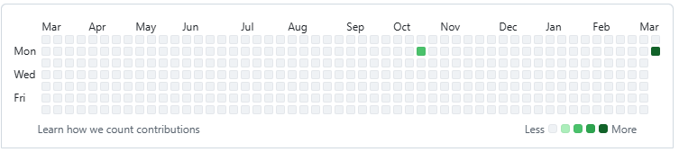

My First Blog Post
Day 1: 9 Mar 2026
Yesterday night I decided to start blogging my whole portfolio creation process. Let's see how this goes! I'm really excited and looking forward to this <3
Initially it was all about just using AI tools after having heard a lot about Claude, Vibe coding and other LLMs' capabilities to create websites with ease.
But being a developer and Claude having a limit on the usage, I coudln't help but start making my portfolio site using a proper combination of HTML, CSS, Javascript.
Using this youtube tutorial for it: https://www.youtube.com/watch?v=ldwlOzRvYOU
Going to make as many changes as possible to the site soon.
My Github currently looks like the image on top! Let's see how it looks at the end of the year, since I usually start projects with a lot of enthusisasm and leave them midway. Hopefully it's not going to happen this time xD
While doing the project I realised that you have to worry about so many small things: like switching between desktop & phone navigation, this itself took such a long time !
Q I'm thinking of today:
Can AI really build an amazing portfolio site for me, while also providing me with a good file structure to update later on?
A: So far, I don't think so, atleast not with a free Claude plan.
Timestamp: 18.07 (after a break)
Got my first error: used an LLM to help identify the issue with guilt the size of Mount Kilimanjaro! I know it's better to be using your own brain to figure out the issues, but I#ve postponed making this site
for so long, that I can't afford to waste any more time, I#ll try wrapping up the basic version soon so that I can debug at my own leisure.
Progress so far: 25% (40 mins of 2:12 hr video)
Timestamp: 23.30 (almost done with first section of the site)
Progress: 50% (halfway mark! Yayyy! <3)
At this pace, I should be able to finish this by tomorrow EOD, let's see how this goes!